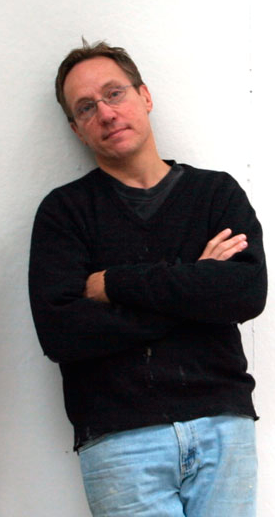

Bruce Herman
PCPC Arts Festival Announces Special Guest Juror and Speaker for 2012: International Artist and Fine Art Professor, Bruce Herman.
Bruce Herman (American, b. 1953) completed both undergraduate and graduate fine arts degrees at Boston University School for the Arts. He studied under Philip Guston, James Weeks, David Aronson, Reed Kay, and Arthur Polonsky.
Herman joined the faculty of Gordon College in Wenham, Massachusetts, in 1984 becoming the first Art Department chair in 1988. Gordon College is among the top Christian colleges in the nation. Herman currently holds the esteemed position of Lothlórien Distinguished Chair where his primary focus as a teacher and artist is figurative painting. He received the Junior Distinguished Faculty Award in 1992 and was awarded the first fully-endowed Distinguished Chair at Gordon in 2006. His art has been exhibited internationally and is housed in museums such as the Vatican Museum in Rome, the Armand Hammer Collection in Los Angeles, and locally at the DeCordova Museum in Lincoln, MA.
Herman lectures widely and has had work published in many books, journals, and popular magazines. His artwork has been exhibited in more than 20 solo and 100 group exhibitions in eleven major cities including Boston, New York, Chicago, Washington, D.C., and Los Angeles.
Herman's paintings, prints and drawings explore the perennial human dilemma-the longing for transcendence and the paradoxical reality of human mortality with all its melancholy, hope and tragicomic truth. Herman also frequently draws on the Bible for images and inspiration, finding in it an inexhaustible reservoir of beauty and meaning. His work has been shown internationally, including in England, Italy, Canada, and Israel. His art is featured in many public and private collections including the Vatican Museum of Modern Religious Art in Rome; The Cincinnati Museum of Fine Arts; DeCordova Museum in Lincoln, Massachusetts; and the Hammer Museum, Grunwald Print Collection, Los Angeles.
Bruce Herman will be speaking directly to the PCPC artists and patrons on the evening of March 1, 2012 at 7:00 pm in PCPC's Fellowship Hall. The title of his presentation will be "An Art of Real Presence: Broken for Healing."
Bruce Herman’s website is bruceherman.com.
Photos from the evening with Bruce Herman, "An Art of Real Presence: Broken for Healing"